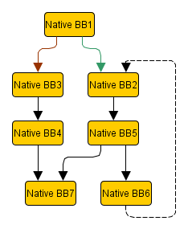
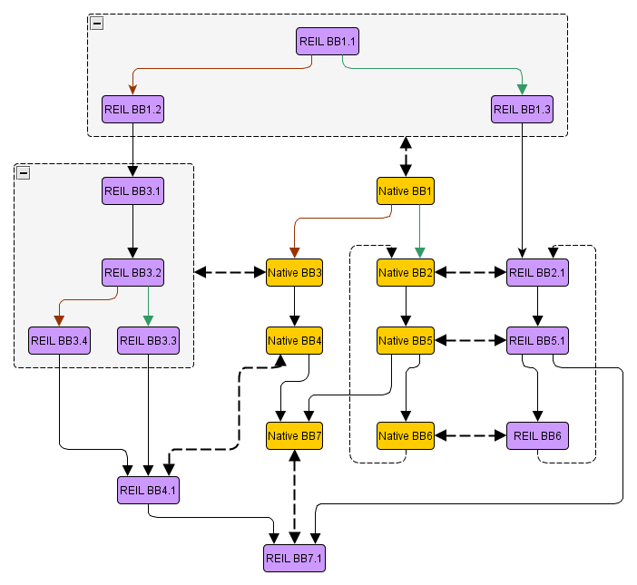
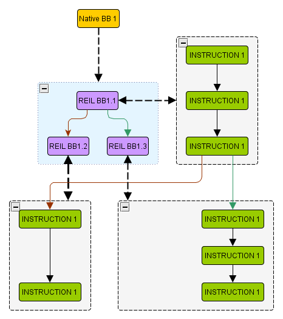

To make it as easy as possible to write new static analysis algorithms based on REIL, BinNavi comes with a static code analysis framework called MonoREIL. This framework is exposed to the plugin API and can therefore be used from scripts and plugins that need to do their own static code analysis.
Static analysis works, very simplified, by defining state and using transforms on a state to generate a new state. A state can be anything from a set of registers to a complex memory abstraction. A transform can be anything from REIL instruction specific register transforms to fine grained memory shape analysis. In BinNavi static analysis is aimed at helping you to get your job done a little faster and giving you the oversight needed in complex situations.
BinNavi provides static analysis on graphs which consist of edges and nodes. A graph here means directed graph. BinNavi keeps state in edges which means that a state is associated with an edge. Transforms are performed in a node and on a state which means that a transformation is defined to take a state as input and have a state as output. Such that for example:
Storing state in edges has a side effect which is important to note. Given you want to analyze the effects of the first node in a graph there is no edge where the incoming state can be associated to. This also holds true for the effect of the exit nodes in a graph as there are no edges to store the associated state. To be able to perform an analysis over the complete graph and still have edges where state can be associated with, artificial start and end nodes are inserted into the graph. These nodes serve as single entry / exit nodes. Such that the start node is connected to all possible entries into a graph and all possible exits from the graph are connected to the end node.
As we have seen the general concept of static analysis as used in BinNavi is keep it simple stupid. We will now take a look how we are actually transforming a native graph into a graph that can be used by the current analysis means that we provide. Native here means architecture native such as x86 or ARM for example.
For any analysis in MonoREIL, the analysis needs a graph to operate on. To explain the concepts assume that we want to analyze the flow graph of a function. For the analysis to work we need a graph as input to our static analysis which it is able to work with. The type of graph that it can currently analyze are REIL instruction graphs. Therefore we will now describe what process is done to transform a native flow graph into a REIL instruction graph.
Our example graph on the left has seven basic blocks containing native instructions. The first step of the transformation is to generate a REIL graph from the flow graph. What happens is that for each native instruction a REIL translation will be performed. This yields one to many REIL instructions per native instruction. These REIL instructions are also organized in basic blocks.

Each REIL basic block consists of one or multiple REIL instructions. As you can see in the graph above, some of the native basic blocks are represented by multiple REIL basic blocks and some are represented by single REIL basic blocks. Furthermore the REIL graph has multiple edges per native instruction, which will be important later when we want to map states to native instruction edges.
The next step of transformation is from the REIL graph to the REIL instruction graph which is the input to the solver. This transformation splits all REIL basic blocks after each REIL instruction and inserts edges in between them.
In the graph on the left there is a schematic representation of how this would look for the first REIL basic block in the graph.
We have now converted a native flow graph all the way to a REIL instruction graph as input for the MonoREIL solver. Also we have observed that due to the fine grained nature of the REIL graph and even more the REIL instruction graph there are many more edges in the graph then in the original flow graph.
We remember that in our general concepts section above we described briefly how we save state in edges and transforms are performed on nodes. The REIL instruction graph provides us with exact the right structure to do this now. As we have nodes where each node only contains a single REIL instruction which we have to specify a transformation for, and after each node we can save the state resulting from transformation in the edges leading either to or from the node.
After we have now covered the general concepts of the MonoREIL framework in BinNavi and discussed what type of graphs we are able to work with, we will now dive into a description of the various components of MonoREIL.
The MonoREIL solver is the class which executes code analysis algorithms. To execute an analysis algorithm, the algorithm needs to be aware of a few concepts and implement a few classes. These are described below.
XXX LINK TO THE API XXX
The MonoReil solver result is the result produced by the MonoREIL solver after the execution of an analysis algorithm. It provides access to all states stored in lattice elements.
XXX LINK TO THE API XXX
All MonoREIL-based algorithms work on so called lattice graphs, directed graphs which are generated from the disassembly. These graphs build the foundation for the analysis, are inputs for the MonoREIL solver. Right now only one type of lattice graph, the instruction graph, is supported. Instruction graphs are directed graphs whose nodes contain exactly one REIL instruction and whose directed edges specify the potential control flow between the instructions in the nodes.
XXX LINK TO THE API XXX
A lattice in MonoREIL provides the container for lattice elements. The requirements for a lattice are small. The first requirement is that it defines how two multiple lattice elements can be combined into a single lattice element XXX EXAMPLE XXX. The second one is that it defines a minimal element for the specified lattice XXX EXAMPLE XXX. The third is that it provides a "<=" is smaller equal method for the lattice elements.
XXX LINK TO THE API XXX
Lattice elements can be arbitrary objects and the lattice itself is parameterized by a lattice element type. The only requirement for lattice elements is that MonoREIL must be able to determine whether a fix point has been reached. To do this, MonoREIL performs a less than or equal comparison for lattice elements while propagating data flow values across the graph. As soon as MonoREIL determines that there is no global improvement with regards to the precision of the data flow values, the iteration stops and the result vector is returned.
XXX LINK TO THE API XXX
MonoREIL works by traversing the lattice graph and propagating analysis results from edge to edge through the transformation specified by the nodes of the graph. When the code analysis algorithm starts the algorithms needs a ground truth to start working on. We can name this the initial state of the analysis. Generally this initial state can be thought as a kind of seed to the analysis for example in register taint tracking the register to be tracked would be in the initial state. Another example is an algorithm that tracks the potential values of registers and it is known beforehand that the register r0 always has the value 0x78110 at instruction 0x1002552 then the initial state should reflect this fact.
The initial state is only special in the sense that it is the first non empty state at analysis start. Other then that it is also saved in a lattice element like every other state as well.
XXX LINK TO THE API XXX
Different analysis algorithms require MonoREIL to take different paths through the lattice graph. Per default currently there are two different ways to traverse the graph downwards which is equivalent to the native execution order and upwards which is reverse execution order.
XXX LINK TO THE API XXX
While traversing the lattice graph, new information about the analysis state of the visited edges must be discovered. This is the role of transformation providers which define how lattice graph nodes transform incoming state into outgoing state depending on analysis graph traversal direction.
The transformation provider is the core part of each code analysis algorithm. Depending on the type of the lattice graph and the complexity of the code analysis algorithm a transformation provider can be anywhere between ten lines and several thousands lines long.
When using the default instruction graph, the transformation provider of an analysis algorithm defines how each instruction influences the tracked information. Assume the implementation of a code analysis algorithm that tracks register values and encounters the REIL instruction add r0, 8, r0. Knowing that before the execution of this instruction the value of register r0 is n the transformation provider would update the state of the lattice graph node that represents that instruction to contain the information that the value of r0 is n+8 after the instruction is executed.
In nearly all cases lattice graphs do not take the form of linked lists. Branches in the input REIL code cause branches in the lattice graph. Whenever two paths of the lattice graph end in the same node, information from both paths is transformed by the node into the outgoing edges. Since there is no generic approach how to combine information from a set of analysis states, it is necessary that all code analysis algorithms implement a so called lattice object that defines how to merge information from converging lattice graph paths.
First of all we have to make sure that all of the above components have been implemented according to our desired analysis. These parts are in short:
Once all components described above are defined for a static code analysis algorithm, the solve function of the MonoReilSolver class can be called. This function takes all defined initial state and traverses through the lattice graph according to the analysis direction defined. On visiting a node, the transformation provider discovers analysis states for all edges of the node, incoming for downwards analysis and outgoing for upwards traversal. This information is transformed in the nodes to outgoing states which are saved to all edges of the node, incoming for upwards traversal and outgoing for downwards traversal.
To get all information that is contained in the graph according to our desired analysis we need to make sure that we propagate the collected information. This is done with the comparison operation that we have described in our lattice. For each state associated to an edge we compare the state associated to the edge prior to the analysis with our results from the state which resulted from the transformation, given the new state has more information we include the node connected to the edge into our traversal. This behavior makes sure that we collect all the information according to our analysis from the graph.This process continues until MonoREIL notices that the analysis algorithm can not find any more information. The final analysis state of all nodes is returned as the result of the analysis algorithm in an object that we call MonoReilSolverResult.
Since information is propagated between edges until no more information can be generated by the analysis algorithm it is vitally important that information is never lost. If a transformation provider or a lattice ever removes information from the current analysis state, the termination of the Solver can not be guaranteed and the code analysis algorithm might get stuck in an endless loop.
For an analysis to be useful to you and to have the option to show your superiors pretty pictures about what you have been doing the last couple of days it is necessary to display the results of the analysis in the graphic user interface of BinNavi. As all of the analysis results get stored in REIL instruction graph edges which are not displayable by BinNavi currently, we provide a function which maps the analysis results of a single native instruction represented as a part of the REIL instruction graph back to the original native instruction for example in the flow graph of a function. The results of this convenience function can then be used to display analysis results in the graphic user interface.
XXX LINK TO API XXX
You can find an example implementation of a MonoREIL-based static code analysis algorithm in the scripts/mono/sample subdirectory of your BinNavi installation.